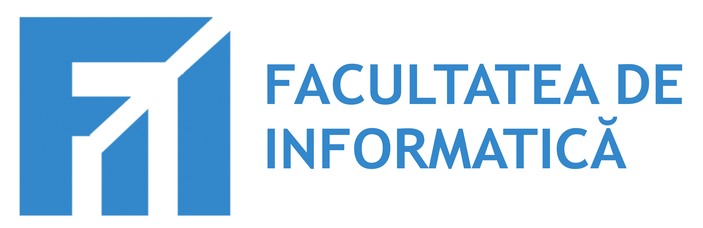

Facultatea de Informatică (FII) din cadrul Universității „Alexandru Ioan Cuza” din Iași, în parteneriat cu Cisco Networking Academy, derulează inițiativa FII Cisco Academy, un program dedicat dezvoltării competențelor digitale și familiarizării cu tehnologii emergente, relevante pentru educație și societate.
Inițiativa se adresează cadrelor didactice, personalului din administrația publică, personalului din instituții publice și altor persoane interesate de dezvoltarea competențelor digitale, prin acces la cursuri online interactive și adaptate nevoilor actuale de formare.
Programul a debutat cu o primă grupă formată din personalul administrativ al Facultății de Informatică, ca parte a angajamentului instituției de a integra competențele digitale în activitatea academică și organizațională.
Ulterior, inițiativa s-a extins către mai multe categorii de beneficiari, iar lista de mai jos este în continuă actualizare, pe măsură ce programul se dezvoltă și atrage noi parteneri:
În prezent, FII Cisco Academy își propune să își extindă impactul la nivel regional, adresându-se profesorilor și unităților de învățământ din întreaga regiune a Moldovei.
Prin intermediul platformei Cisco Networking Academy, participanții au acces la cursuri introductive:
Aceste programe oferă oportunitatea de învățare în ritm propriu și eliberarea unei diplome de participare la finalizarea parcursului educațional.
Prin această inițiativă, Facultatea de Informatică din cadrul Universității „Alexandru Ioan Cuza” din Iași își consolidează rolul de promotor al educației digitale și al formării continue, contribuind activ la dezvoltarea competențelor necesare într-o societate aflată în plină transformare tehnologică.
FII Cisco Academy creează punți între mediul academic, mediul preuniversitar și societate, sprijinind adaptarea educației și a competențelor la noile realități tehnologice.
Inițiativa FII Cisco Academy este coordonată și implementată de o echipă în cadrul Facultății de Informatică, Universitatea „Alexandru Ioan Cuza” din Iași, cu sprijinul partenerilor Cisco Networking Academy.
Echipa de proiect: